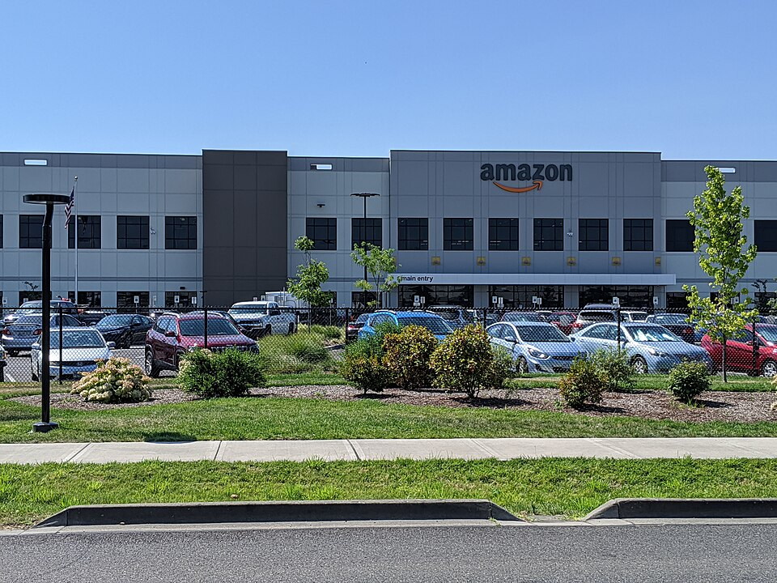
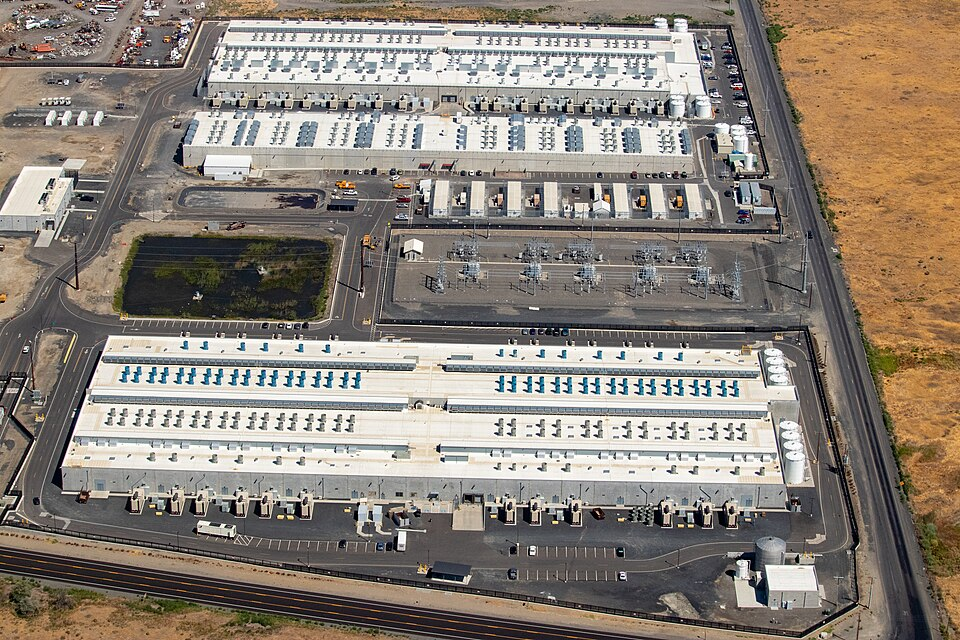
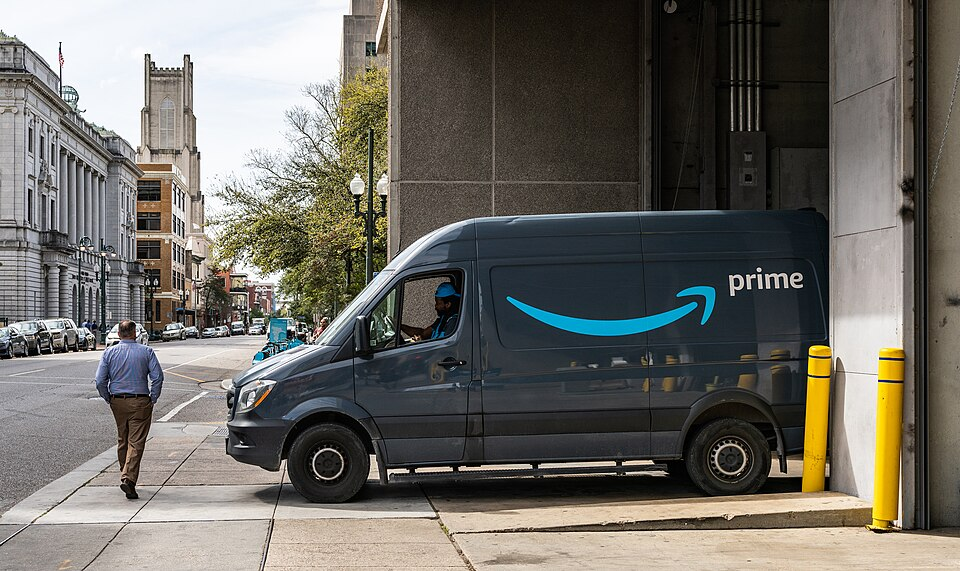

설립연도
1994년

온라인으로 거의 모든 물건을 파는 쇼핑몰로 시작한 회사예요. 지금은 기업에 서버와 AI 계산 자원을 빌려주는 클라우드 서비스 AWS가 매출은 작아도 이익을 가장 많이 내는 사업이에요. 유료 회원제 프라임, 광고, 동영상 서비스도 함께 운영해요.
칸에 마우스를 올리거나 누르면 자세한 설명을 볼 수 있어요.

아마존이 직접 물건을 사서 파는 것과, 다른 판매자가 아마존 장터에서 파는 것을 함께 해요. 판매자에게는 수수료와 창고·배송 서비스 요금을 받아요.
대표 예아마존닷컴, 판매자 장터, 물류·배송

기업들이 서버, 저장공간, AI 계산 자원을 인터넷으로 빌려 쓰는 세계 1위 클라우드예요. 매출은 전체의 약 18%지만 이익은 가장 많이 내요.
대표 예AWS 서버·저장, AI 서비스(베드록), 자체 칩
아마존에서 물건을 찾을 때 위쪽에 보이는 상품 광고, 프라임 비디오 광고 등이에요. 이익이 많이 남는 사업이라 빠르게 키우고 있어요.
대표 예검색 결과 상품 광고, 프라임 비디오 광고

연회비를 내면 무료 빠른 배송과 영화·드라마를 볼 수 있는 프라임 회원제예요. 회원들이 아마존에서 더 자주 사게 만드는 핵심 장치예요.
대표 예아마존 프라임, 프라임 비디오, 아마존 뮤직
원화 금액은 1달러 = 1,334.9원(2026년 11월 27일 유럽중앙은행 기준환율)으로 환산한 대략적인 값이에요.
| 기간 | 매출 | 영업이익 | 순이익 |
|---|
사업마다 겨루는 상대가 달라요